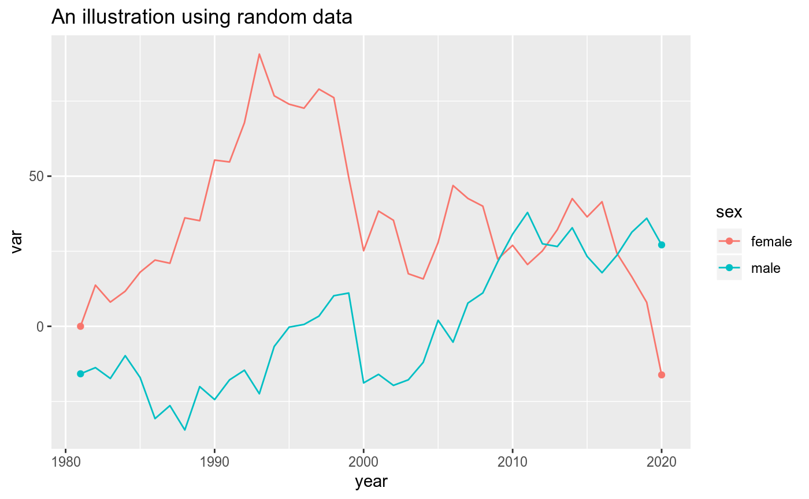
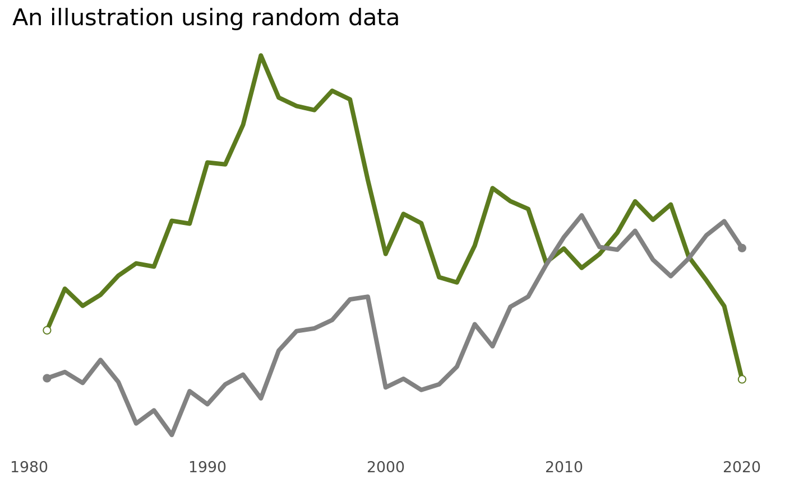

Use nrsplot to help you create ggplot2 charts in the style used by National Records of Scotland. nrsplot is inspired by the BBC Visual and Data Journalism team’s bbplot. nrsplot can be used interactively or as part of a reproducible analytical pipeline.
Installation
From GitHub
# install.packages("devtools")
devtools::install_github("DataScienceScotland/nrsplot")From source
- Go to the nrsplot repository on GitHub
- Click Clone or download
- Click Download ZIP
- Save the zip file locally
- Unzip the zip file
- Replace <THESE BITS> with your information. Then run in R:
install.packages("<FILEPATH OF THE UNZIPPED FILE>/nrsplot-master", repos = NULL,
type="source", lib = "<YOUR R PACKAGE LIBRARY DIRECTORY>")Not working? Most people seem to rush these steps. Take a breath and slow down:
- Have you followed the above steps precisely?
- Did you unzip the file?
- Did you copy and paste the above code snippet accurately?
- Have you used forward slashes in the filepaths?
- Does the first filepath point to the file you unzipped?
- Are you sure it’s not pointing to the original zipped file? Or the folder containing the unzipped file?
- Does the second filepath point to your R package library?
Examples
A normal line chart:
library(ggplot2)
library(nrsplot)
set.seed(42)
df <- data.frame(year = 1981:2020,
sex = c(rep("female", 40), rep("male", 40)),
var = diffinv(rnorm(79)) * 10,
endpoints = NA)
df[["endpoints"]][df[["year"]] %in% c(1981, 2020)] <- df[["var"]][df[["year"]] %in% c(1981, 2020)]
p <- ggplot(df, aes(year, var, colour = sex)) +
labs(title = "An illustration using random data")
p +
geom_line() +
geom_point(aes(y = endpoints))
Apply the NRS theme:
p +
geom_line_nrs() +
geom_point_nrs(aes(y = endpoints, fill = sex, colour = sex)) +
nrs_theme() +
theme(axis.text.y = element_blank()) +
scale_colour_manual(values = c(nrs_palette[["household"]][["main"]],
nrs_palette[["neutral"]][["grey"]])) +
scale_fill_manual(values = c("white",
nrs_palette[["neutral"]][["grey"]]))